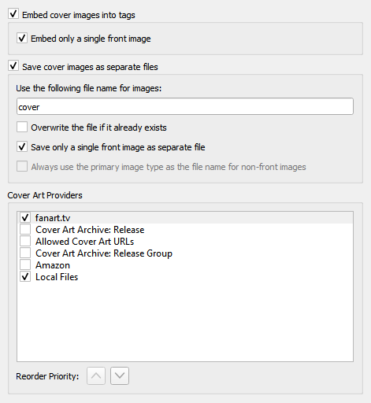

Fournisseurs d’art de couverture
{kind=link}
Picard peut télécharger Cover Art à partir d’un certain nombre de sources, et vous pouvez choisir les sources que vous souhaitez que Picard utilise. Vous pouvez activer plus d’un fournisseur et choisir l’ordre dans lequel les fournisseurs sont interrogés. Picard essaiera les fournisseurs de haut en bas jusqu’à ce qu’une image soit renvoyée.
Archives d’art de couverture : Edition
Les Cover Art Archive (CAA) sont les archives MusicBrainz des couvertures en coopération avec Internet Archive. Le Cover Art Archive est la base de données la plus complète des couvertures (par exemple : couvertures avant, arrière, livrets, CD).
Archives d’art de couverture : Groupe d’édition
Ce fournisseur utilise l’image de couverture de Cover Art Archive attribuée au groupe de versions. Il s’agit généralement de l’image qui décrit le mieux le groupe de versions dans son ensemble ou l’image avec la meilleure qualité visuelle, mais ce n’est pas nécessairement la couverture exacte de la version que vous marquez. Ce fournisseur est un bon choix si vous vous souciez davantage de la qualité visuelle que d’avoir une représentation exacte de votre version. C’est également une bonne solution de secours pour le fournisseur de Cover Art Archive.
URL de Couverture Autorisées
Cela utilisera des images fournies par des sites tiers approuvés. L’emplacement de l’image est stocké en tant que relation URL pour la version dans la base de données MusicBrainz, et seuls les sites approuvés peuvent être utilisés pour cette relation.
Note
Ce type de relation est désormais obsolète dans MusicBrainz et n’est plus utilisé. Voir Liste blanche des couvertures dans le Guide de style pour plus d’informations.
Fichiers locaux
Chargez la pochette à partir de fichiers locaux. Les noms de fichiers à charger peuvent être configurés dans les options du fournisseur Fichiers locaux.
En plus des fournisseurs de couvertures intégrés décrits ci-dessus, des fournisseurs de couvertures supplémentaires peuvent être installés en tant que plugins.
Amazon : Amazon a souvent une pochette alors que d’autres sites ne le font pas, cependant, bien que cette illustration soit presque toujours pour le bon artiste et l’album, elle peut ne pas être la pochette absolument correcte pour la version spécifique avec laquelle vous avez tagué ta musique. Remarque : le fournisseur de couvertures Amazon était intégré à Picard 2.1.3 et aux versions antérieures. Pour les versions ultérieures, il doit être installé en tant que plugin séparé.
fanart.tv : utilise la pochette de fanart.tv, qui se concentre sur la pochette avec une haute qualité visuelle. Ce fournisseur fournit un représentant de la pochette pour le groupe de versions et non pour la version individuelle.
TheAudioDB : utilise la pochette de TheAudioDB, qui se concentre sur la pochette avec une haute qualité visuelle. Ce fournisseur fournit un représentant de la pochette pour le groupe de versions et non pour la version individuelle.